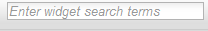
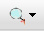
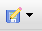
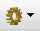

This tutorial assumes you have gone through the previous Tutorial 1.
Bring up the Sample Mashup Application and make sure that the canvas is cleared and make sure that the widget search box:

is clear. Then show the list of widgets by clicking on the magnifying glass icon: . Now we will filter the list to only show a subset of the available widgets. Type "dyn" into the widget search box and press the Return key on your keyboard. The list of widgets will show only the widgets whose names contain the letters "dyn", particularly, "Dynamic Data Generator" and "Dynamic Data Viewer".
Now we are going to save this mashup onto the OpenAjax server. Click on the file menu:

and select 'Save As'. Into the dialog, enter a name for this mashup, such as 'dyndata1'. and click 'OK'. Now choose the 'New' command from the file menu to clear your canvas and then choose 'Open' from the file menu and a small dialog will appear. Click on the small down arrow to the right of the type-in box and you should see the name of your saved mashup. Select that name and click 'Open'. If you see the Dynamic Data Viewer widget continuously updating its display, press the 'Pause' key to stop the flow of events.
The final step in this tutorial is to bring up the widget repository user interface. Click on the manage tool:

and select the Manage Widgets command. This will open a separate window showing the widget repository user interface which will allow you to see metadata about the widgets that have been installed on the server, and if you have proper permissions, the ability to add or edit those widgets. Everyone can view the widgets. To view a particular widget, click on one of the widgets in the list and then click 'View' at the bottom of the repository window. For example, click on the Dynamic Data Viewer widget, then click 'View'. A dialog will appear with some descriptive information about the widget. Click on 'View Metadata File' and a browser window will open which shows the XML content for the OpenAjax Metadata file for that widget.